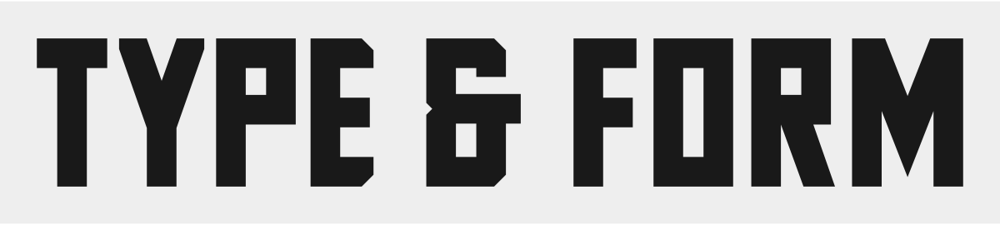

Shalymenov Block is a display family built from straight edges, square counters and a common stroke system. It is intended for headlines, posters, short phrases and prominent labels. The four upright styles are Light, Regular, Bold and ExtraBold. Each style is an independent static master, with spacing and counter dimensions designed for its stroke weight.
The lowercase uses a deliberately compact, nearly small-cap rhythm. A two-bowl b, an open g and an r with a diagonal leg are intentional features of this family. Short bevels distinguish selected corners while the main outlines retain their angular construction. Cyrillic letters share the same weight system, with external tails where the letter requires them.
The technical revision introduced compact accents, consistent stacking anchors, side carons and dotless alternates for accented i and j. Canonically composed and decomposed text produce matching results. Vertical metrics are shared by all four weights. For dense accented text, the interactive specimen can calculate additional line spacing from the actual characters.
The editable UFO sources and the fontmake build are available in the project repository under the SIL Open Font License. The family has not yet been accepted into Google Fonts.